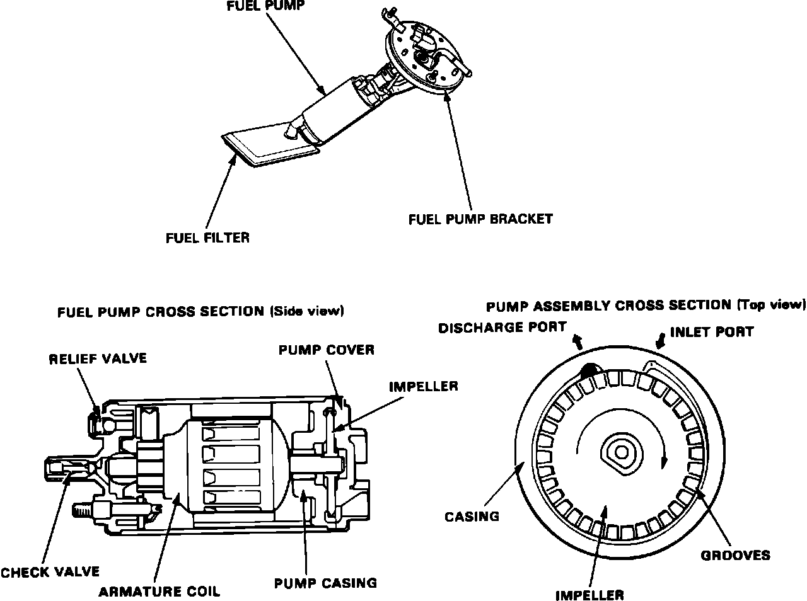

Fuel Pump: Description and Operation
Fuel Pump:

The fuel pump supplies fuel under pressure to the injection manifold assembly. It is located in the fuel tank and accessed through the maintenance cover in the luggage compartment.
The fuel pump is a submersed circumference flow pump comprised of a DC motor, impeller, pump casing, and pump cover. The assembly utilizes an inlet filter, a pressure relief valve, and a check valve.
The fuel pump is activated by the main relay. Fuel enters the inlet port through the tank filter and flows inside the motor to the discharge port. The discharge port contains a check valve to maintain residual fuel pressure when the pump is shut off. If fuel flow to the injection manifold is obstructed, fuel pressure is bypassed to the inlet port by the pressure relief valve.